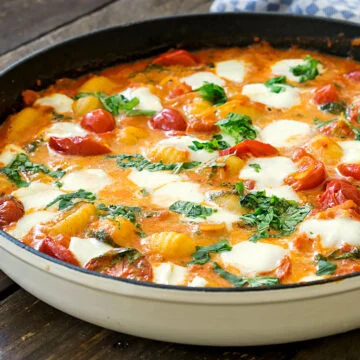

Gnocchi

Description
Perfect Gnocchi
Ingredients
- 1 pack of gnocchi from the refrigerated shelf approx. 400g
- 1 tablespoons olive oil
- 2 small shallots
- 1 clove of garlic
- 1 teaspoon tomato paste
- Salt, pepper & nutmeg
- 1 can of diced tomatoes 400g
- 150 g cherry tomatoes, preferably the small, elongated “date tomatoes”
- 2 tablespoons white wine vinegar
- 50 ml cream
- 1 bunch of basil
- 1 ball of buffalo mozzarella
- Chili flakes as desired
Steps
- Bring a large pot of salted water to the boil. Then reduce the heat and let the gnocchi simmer until cooked. As soon as the gnocchi float to the surface of the water, fish them out with a slotted spoon, place them in a bowl and set aside.
- Peel the shallots and garlic and dice finely. Wash and halve the cherry tomatoes.
- Heat the olive oil in an ovenproof pan and sauté the shallots and garlic while stirring. Add the tomato paste and roast briefly.
- Add the cherry tomatoes, diced tomatoes and the white wine vinegar and stir everything together carefully. Season with salt, pepper and nutmeg and simmer over medium heat for about 5-7 minutes.
- Stir in the cream, then add the drained gnocchi to the pan and mix with the sauce.
- Roughly tear the mozzarella and spread over the gnocchi with tomato sauce. Place the pan in the middle of the oven preheated to 180 degrees top/bottom heat. Gratinate for about 10 minutes until the cheese has melted nicely.
- In the meantime, wash the basil, pick off the leaves and chop roughly. As soon as the gnocchi comes out of the oven, add the basil over it and serve. If desired, season with a few chili flakes.